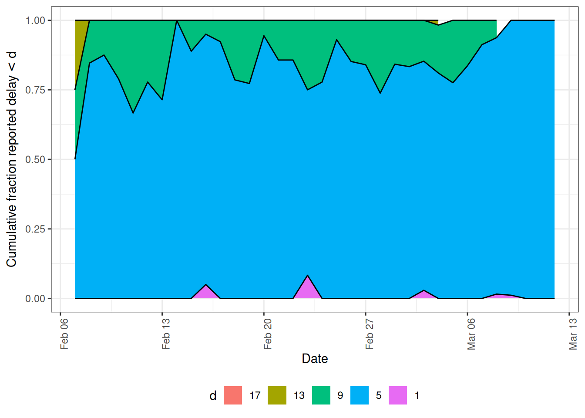
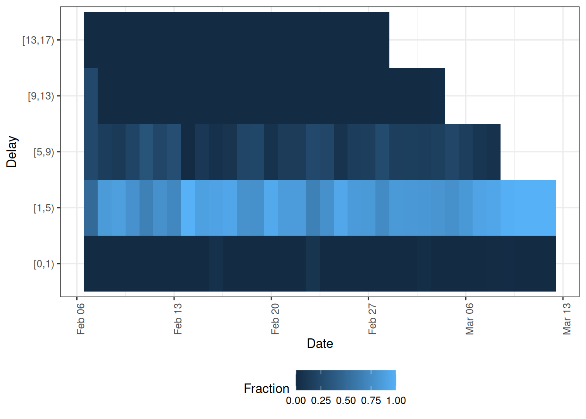
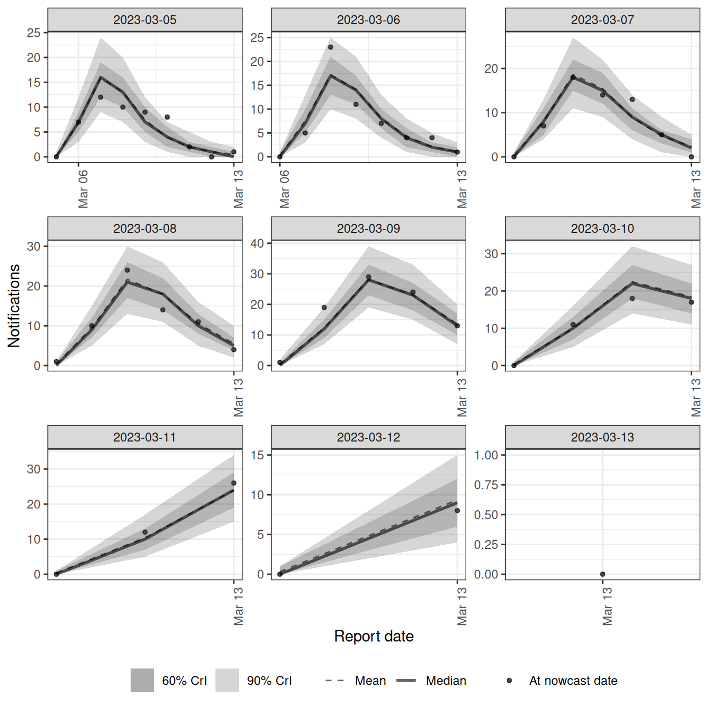
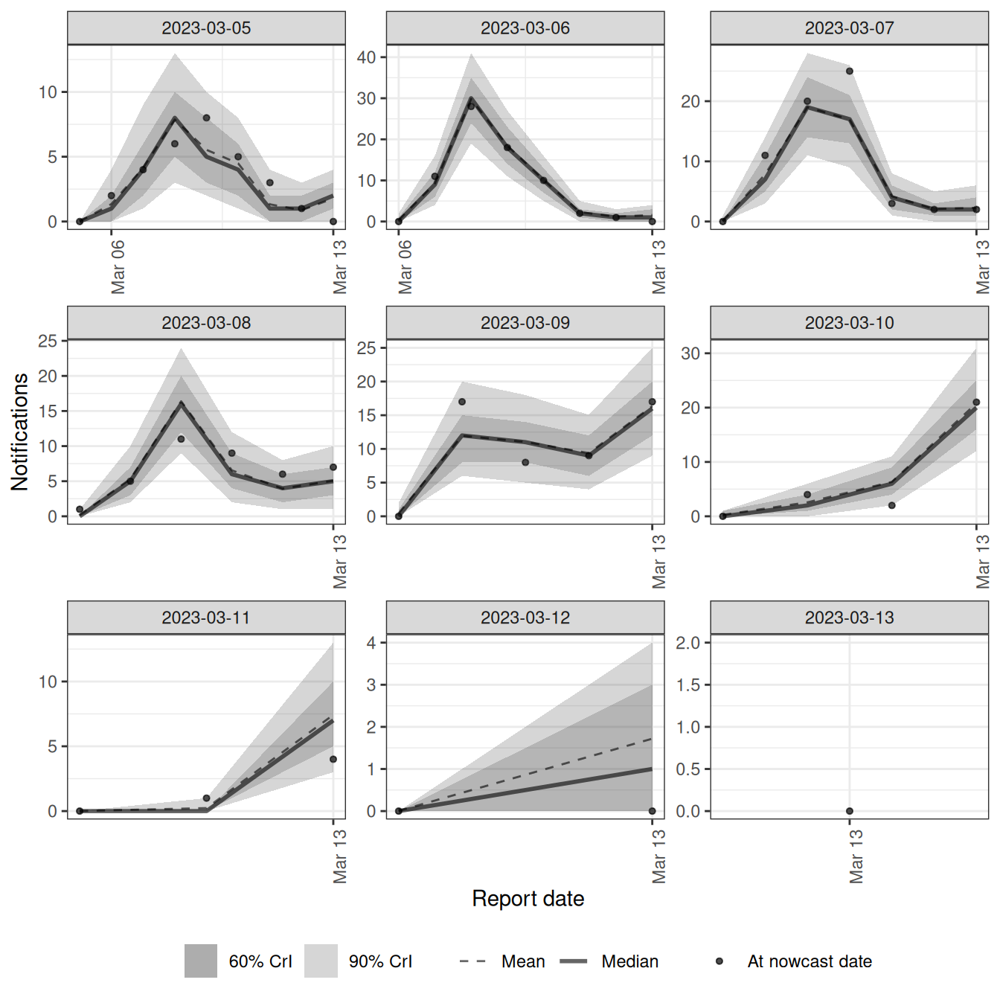
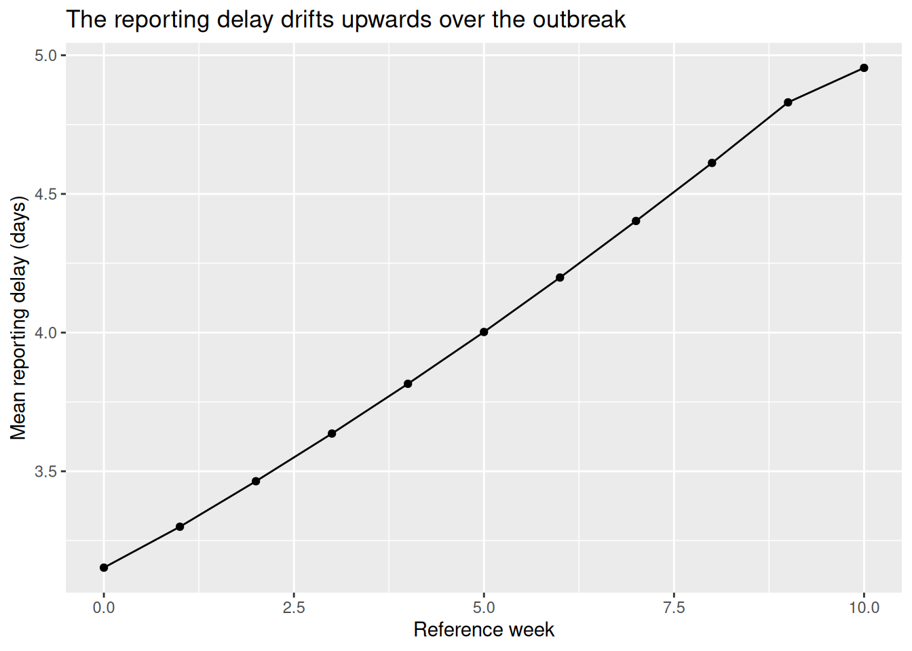
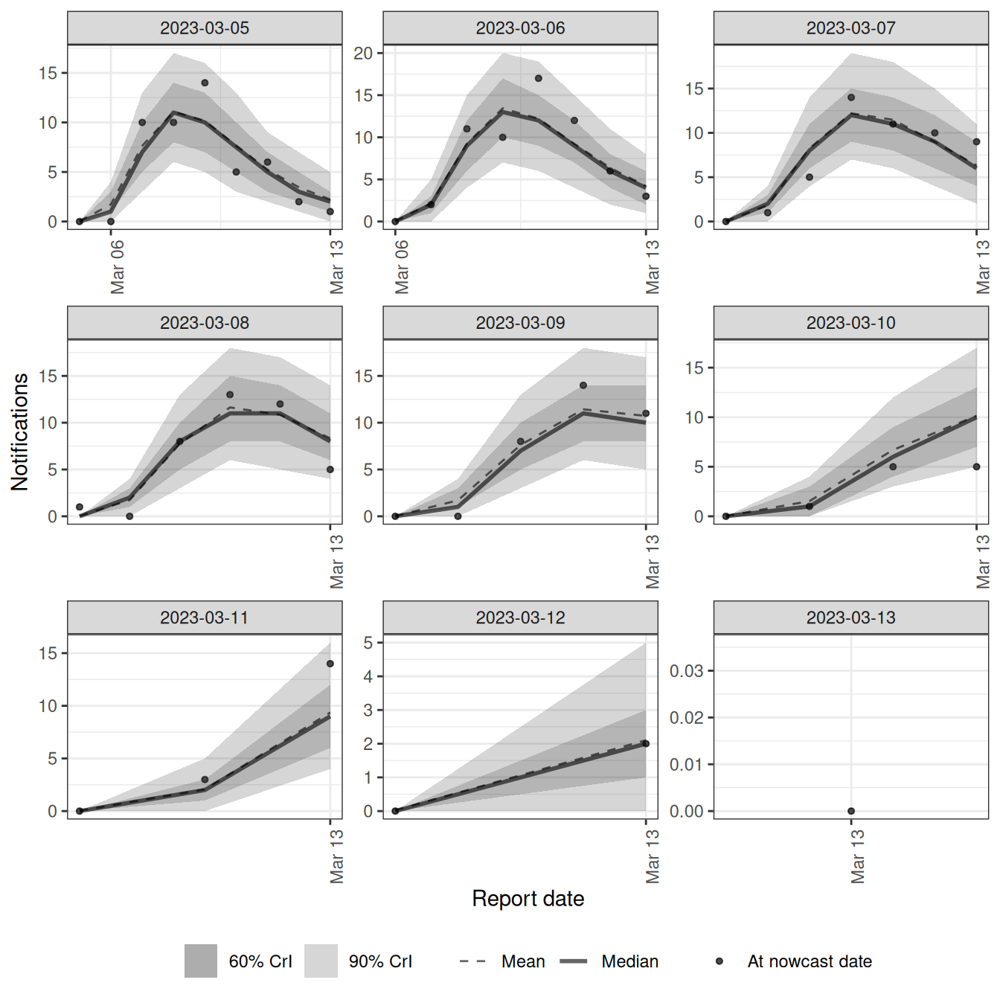
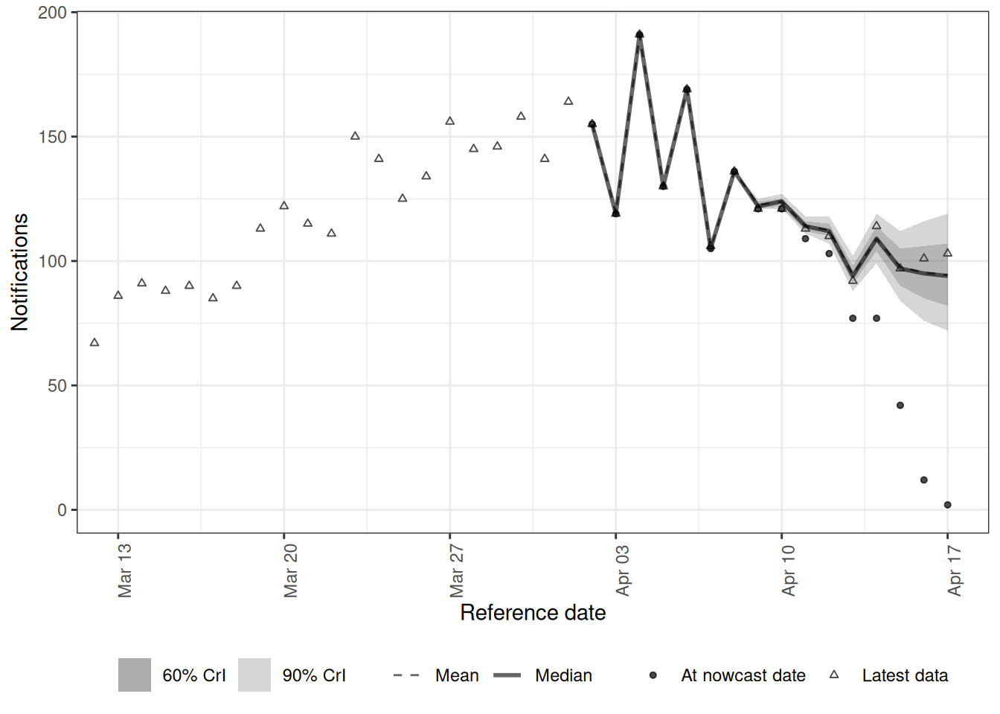
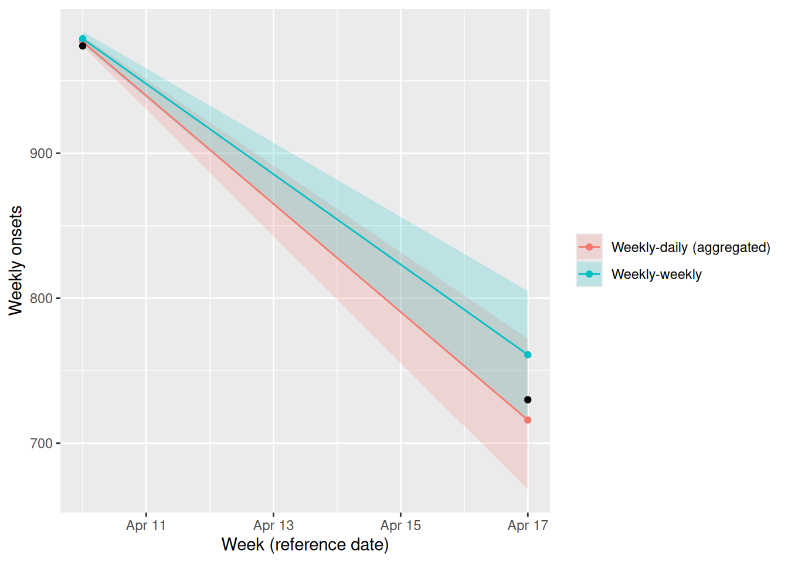

library("nfidd.nowcasting")
library("dplyr")
library("tidyr")
library("ggplot2")
library("epinowcast")
library("data.table")Modelling complex reporting processes
Introduction
In the joint nowcasting session we built a nowcasting model in Stan that jointly estimated the delay distribution and the nowcast from the reporting triangle, and then added a renewal process so transmission informed the nowcast. That model assumed a single delay distribution, the same on every day.
Bespoke models like that are ideal for learning how nowcasting works, and they remain a reasonable choice for real analyses when you understand the reporting process well. But routine surveillance data is usually messier: the reporting process itself can be complicated in ways a single fixed delay cannot capture. In this session we introduce epinowcast (Sam Abbott et al. 2024), one flexible framework for these situations. We reproduce the joint nowcasting model in epinowcast, then extend it to handle reporting complications the bespoke model cannot: a day-of-week reporting effect, a delay that drifts over time, and weekly (batched) reporting. Throughout we simulate data with the feature, fit a model that handles it, and look at the result.
Slides
Objectives
This session shows why real reporting processes are more complex than a single fixed delay allows, reproduces the joint nowcasting model in epinowcast, and extends it to complex reporting features through worked examples.
NoteSetup
Source file
The source file of this session is located at sessions/complex-reporting-processes.qmd.
Libraries used
In this session we will use the nfidd.nowcasting package to load infection times and the simulation helpers we have used throughout, the dplyr and tidyr packages for data wrangling, and the ggplot2 library for plotting. The worked examples additionally use the epinowcast package and the data.table package that it uses for its data structures.
Initialisation
We set a random seed for reproducibility. We also tell epinowcast not to warn about partially specified initial conditions, which keeps the output tidy.
set.seed(123)
options(cmdstanr_warn_inits = FALSE)Why real reporting is more complex than our models have assumed so far
Recall the joint nowcasting model: we modelled each cell of the reporting triangle as
\[ n_{t,d} \mid \lambda_{t}, p_{t,d} \sim \text{Poisson}\left(\lambda_{t} \times p_{t,d}\right), \]
where \(\lambda_{t}\) is the expected number of onsets on day \(t\) and \(p_{t,d}\) is the probability that an onset on day \(t\) is reported with a delay of \(d\) days. We gave \(\lambda_{t}\) a daily geometric random walk (or a renewal process) and \(p_{t,d}\) a single delay distribution, the same on every day.
That worked in our simulated examples because we simulated from almost exactly that model. Real data rarely cooperate so neatly. Routine surveillance data often shows features a single fixed delay does not capture: day-of-week reporting effects, reporting delays that vary over time or by strata such as age or region, weekly or batched reporting, and missing or late reports.
NoteTake 5 minutes
Think about the joint nowcasting model you built. What would you have to change in that Stan code to add a day-of-week reporting effect and let the delay distribution change over the course of the outbreak?
NoteSolution
There is no single right answer, but the concrete changes add up quickly.
- A day-of-week reporting effect. The reporting probability would have to depend on the calendar day the report lands on, not just the delay \(d\). In practice you would turn the delay vector into a matrix indexed by reference date and delay, \(p_{t,d}\), and multiply each cell by a day-of-week factor \(w_{(t+d)\,\bmod\,7}\) keyed on the report date \(t+d\). That means seven new parameters (a
simplexor sum-to-zero vector for identifiability) and an extra loop over cells intransformed parameters. - A time-varying delay. You would put a random walk on the parameters of the delay distribution, for example
meanlog[t] = meanlog[t-1] + sigma * eta[t](and similarly forsdlog), each with its own prior, then recompute the delay PMF for every reference date \(t\) rather than once. That is a new vector of innovationseta, a new standard-deviation parametersigmawith a prior, and a per-date PMF calculation. - Keeping it a valid distribution. The probabilities for each reference date must still sum to one over delays after both changes, so you would re-impose the per-date normalisation (a simplex or an explicit renormalisation) every day instead of reusing one shared, pre-normalised vector.
None of this is impossible, and writing it yourself remains a reasonable option. But it is the point at which reaching for a general framework that already implements these features lets us focus on the modelling choices rather than the implementation.
Introducing epinowcast
epinowcast (Sam Abbott et al. 2024) is a Bayesian framework for real-time infectious disease surveillance. It is one of several tools for this kind of modelling, and it is a direct generalisation of the joint nowcasting model we built: it works from the reporting triangle and jointly estimates the expected counts and the reporting process, but it makes each component more flexible and exposes them through a formula interface rather than hand-written Stan code.
epinowcast decomposes the problem into modular pieces.
- An expectation model for the expected counts \(\lambda_{t}\) (the analogue of our geometric random walk or renewal process).
- A reference date model for the delay distribution by date of the epidemiological event (the analogue of our \(p_{t,d}\), but allowed to vary over time and by covariates).
- A report date model, new to us, for effects that act on the report date, such as day-of-week reporting effects.
- A missing data model, also new to us, for reports whose reference date is missing or not yet known.
- An observation model for the likelihood linking expected to observed counts (the analogue of our Poisson likelihood for \(n_{t,d}\)).
Each piece is specified with an R formula, so adding a day-of-week effect or a time-varying delay is a one-line change rather than a rewrite of the model. Internally, epinowcast still builds and fits a Stan model.
Tip
We are treating epinowcast as a tool here rather than dissecting its internals. The mapping back to the bespoke model is deliberate: if you understand the joint nowcasting session, you already understand what epinowcast is doing, just with more flexible components.
The course model, in epinowcast
Before adding anything new, let us reproduce the joint nowcasting model we already built, but in epinowcast. We simulate exactly as in the joint nowcasting session.
ip_pmf <- make_ip_pmf()
onset_df <- simulate_onsets(
make_daily_infections(infection_times), ip_pmf
)
cutoff <- 71
reporting_delay_pmf <- censored_delay_pmf(
rlnorm, max = 15, meanlog = 1, sdlog = 0.5
)
reporting_triangle <- onset_df |>
filter(day < cutoff) |>
mutate(
reporting_delay = list(
tibble(d = 0:15, reporting_delay = reporting_delay_pmf)
)
) |>
unnest(reporting_delay) |>
mutate(
reported_day = day + d,
reported_onsets = rpois(n(), onsets * reporting_delay)
)Putting the data into epinowcast format
epinowcast expects data in a “long” format with one row per (reference date, report date) pair, where confirm is the cumulative count for that reference date as known on that report date. This is the same reporting triangle we have been using, just with calendar dates instead of integer days and cumulative rather than incremental counts.
We attach arbitrary calendar dates (so that, later, weekends line up with a day-of-week effect) and let epinowcast’s own enw_add_cumulative() form the cumulative counts from the incident new_confirm column, rather than computing the cumulative sum by hand. Because we reuse this transformation in each example below, we wrap it in a small helper.
Our simulation already generates every report an onset will ever receive (all delays \(d = 0, \ldots, 15\)), so to_enw_format() formats the complete eventually-reported data. From that one complete data set we derive the two things we need using epinowcast functions:
- the data available as of the nowcast, which we fit to, using
enw_filter_report_dates()to keep only reports that had arrived by the nowcast date; - the eventually-reported data, which we judge the nowcast against, using
enw_latest_data()to take the most recent report for each reference date.
After filtering to the as-of-nowcast reports we call enw_complete_dates() to make the reporting triangle explicitly complete, so any reference-date and delay cell that never received a report is filled with a zero rather than left missing. Our simulation is already complete so this changes nothing here, but on real data it guards against gaps in the triangle before preprocessing.
# Day 0 of the simulation is a Monday
ref_date0 <- as.Date("2023-01-02")
# The nowcast is made once reports up to this date are in
nowcast_date <- ref_date0 + (cutoff - 1)
# Zoom the result plots to a recent window around the nowcast horizon
plot_from <- nowcast_date - 35
# Fit only the most recent reference dates to keep the models fast
n_history <- 35
# Format the complete (eventually-reported) data in epinowcast's long format
to_enw_format <- function(triangle) {
triangle |>
transmute(
reference_date = ref_date0 + day,
report_date = ref_date0 + reported_day,
new_confirm = reported_onsets
) |>
arrange(reference_date, report_date) |>
as.data.table() |>
enw_add_cumulative()
}
# The as-of-nowcast snapshot we fit to
enw_long <- to_enw_format(reporting_triangle) |>
enw_filter_report_dates(latest_date = nowcast_date) |>
enw_filter_reference_dates(include_days = n_history) |>
enw_complete_dates(max_delay = 16, missing_reference = FALSE)
head(enw_long)Key: <reference_date, report_date>
report_date reference_date new_confirm confirm
<IDat> <IDat> <int> <int>
1: 2023-02-07 2023-02-07 0 0
2: 2023-02-08 2023-02-07 1 1
3: 2023-02-09 2023-02-07 0 1
4: 2023-02-10 2023-02-07 0 1
5: 2023-02-11 2023-02-07 1 2
6: 2023-02-12 2023-02-07 1 3
Tip
enw_filter_report_dates() plus enw_latest_data() makes the two data sets explicit, which is why we use them here. enw_retrospective() is a one-shot helper that produces an as-of-nowcast snapshot and its eventual-data comparison together, and is worth knowing about for real analyses.
NoteTake 2 minutes
How does this data structure relate to the reporting triangle from the joint nowcasting session?
NoteSolution
It is the same idea in a different layout. Each reference_date is a row of the triangle, each report_date gives a column, new_confirm is the cell count \(n_{t,d}\), and confirm is its cumulative version over delays. epinowcast works with the cumulative confirm and converts it back into the reporting triangle internally during preprocessing.
Preprocessing and fitting
epinowcast preprocesses the data into its internal reporting-triangle representation, where we also choose the maximum delay we will model. Note that max_delay counts delay classes, and delays are zero-indexed: max_delay = 16 models \(d = 0, \ldots, 15\), which is exactly the support we simulated from. Setting it to 15 would quietly drop the last delay class rather than model it.
pobs <- enw_preprocess_data(enw_long, max_delay = 16)The preprocessed object has a print() method that summarises what epinowcast has built from our data.
pobs── Preprocessed nowcast data ───────────────────────────────────────────────────
Groups: 1 | Timestep: day | Max delay: 16
Observations: 35 timepoints x 35 snapshots
Max date: 2023-03-13
Datasets (access with `enw_get_data(x, "<name>")`):
obs : 440 x 8
new_confirm : 440 x 9
latest : 35 x 8
missing_reference : 0 x 4
reporting_triangle : 35 x 18
metareference : 35 x 8
metareport : 50 x 10
metadelay : 16 x 5 It also has its own plot() method. By default it shows the latest observed notifications by reference date (type = "obs"), which is the incomplete picture the nowcast will correct.
plot(pobs)
The same method also exposes epinowcast’s delay diagnostics through the type argument, which are worth inspecting before fitting. type = "delay_cumulative" shows the empirical cumulative proportion reported by delay, so we can see how quickly reports accumulate and check that our max_delay is long enough to capture most of the distribution.
plot(pobs, type = "delay_cumulative")
type = "delay_fraction" shows the same information as a heatmap of the fraction reported by delay and reference date, which makes any drift in the delay over time easier to spot.
plot(pobs, type = "delay_fraction")
Now we specify the model. We define each module explicitly so the mapping back to the bespoke model is visible.
# Expected counts lambda_t: a random effect by day on the growth rate, which
# gives a geometric random walk on the expected counts
expectation_module <- enw_expectation(~ 0 + (1 | day), data = pobs)ℹ The r design matrix is sparse (>90% zeros). Consider using `sparse_design = TRUE` in `enw_fit_opts()` to potentially reduce memory usage and computation time.# Delay distribution p_{t,d} by reference date: a single parametric lognormal
# delay, constant over time (epinowcast's default reference model)
reference_module <- enw_reference(~ 1, data = pobs)
# Observation model: Poisson, as in n_{t,d} ~ Poisson(lambda_t * p_{t,d})
obs_module <- enw_obs(family = "poisson", data = pobs)
ImportantThe expectation formula is on the growth rate
The formula in enw_expectation() describes the daily growth rate \(r_t\), not the expected counts directly. epinowcast builds the expected counts by accumulating it, \(\log \lambda_t = \log \lambda_0 + \sum_{s \le t} r_s\). A random effect by day, ~ 0 + (1 | day), therefore makes \(r_t\) independent noise and \(\log \lambda_t\) a random walk, which is the geometric random walk we used in the course model. Writing ~ rw(day) instead would put a random walk on the growth rate, so the expected counts would follow a smoother trend that carries the current growth forward. On this data that model extrapolates the recent trend and its nowcast misses the eventual counts at some of the most recent dates, so we use the random effect by day for the daily models here. The right choice depends on the data. When reports arrive only once a week, later in this session, we keep the same structure but move it to the weekly timestep, ~ 0 + (1 | week).
TipReproducing the bespoke model exactly
To match the bespoke joint-nowcast model exactly, estimate the delay nonparametrically as a free per-delay distribution (a simplex over delays) instead of the parametric lognormal:
reference_module <- enw_reference(
parametric = ~ 0, distribution = "none", non_parametric = ~ 1, data = pobs
)This makes the delay a free per-delay distribution matching the bespoke model, but fits noticeably more slowly, which is why the session defaults to the parametric lognormal above.
We collect the fitting options once and reuse them across the session. These play the same role as the arguments to nfidd_sample() did in earlier sessions, and we set them to match: four chains run in parallel with 500 warmup and 500 sampling iterations each.
fit_opts <- enw_fit_opts(
save_warmup = FALSE, pp = TRUE,
chains = 4, parallel_chains = 4,
iter_warmup = 500, iter_sampling = 500,
show_messages = FALSE, refresh = 0
)We then fit the model, passing each module explicitly.
course_nowcast <- epinowcast(
pobs,
expectation = expectation_module,
reference = reference_module,
obs = obs_module,
fit = fit_opts
)
NoteTake 3 minutes
Compare these modules to the choices we made in the joint nowcasting session. Which module corresponds to \(\lambda_{t}\), which to \(p_{t,d}\), and which to the likelihood?
NoteSolution
enw_expectation()plays the role of \(\lambda_{t}\): a random effect by day on the growth rate, which accumulates into the geometric random walk on expected onsets that we used.enw_reference(~ 1)plays the role of the delay distribution \(p_{t,d}\): a single parametric lognormal delay held constant over time. (The optional callout above shows how to recover the nonparametric free-PMF delay used in the bespoke joint-nowcast model.)enw_obs(family = "poisson")plays the role of the likelihood \(n_{t,d} \sim \text{Poisson}(\lambda_{t} p_{t,d})\).
This is the same joint nowcasting model we built by hand, now expressed as a handful of modules. Everything that follows is an extension of one of these modules, or the addition of a report-date module for report-date effects.
Plotting the nowcast
epinowcast objects come with plot() and summary() methods, so we do not have to extract draws by hand as we did with our bespoke fits. To judge the nowcast we want to compare it against what was eventually reported, so we take the latest report for each reference date from the complete data with enw_latest_data() and pass it to plot() via latest_obs. Building the comparison data from the complete data matters.
latest_obs <- enw_latest_data(to_enw_format(reporting_triangle))
plot(course_nowcast, latest_obs = latest_obs) +
coord_cartesian(xlim = c(plot_from, nowcast_date))
As in our bespoke nowcasts, the most recent dates are the most uncertain because they are the least complete. This default plot is the nowcast by reference date. epinowcast can also plot the model’s posterior predictions against the data that were reported at the time with type = "posterior_prediction", which we facet by reference date to check the fit to each date’s reports.
# Keep only the recent reference dates so each facet is legible
pp_recent <- plot(course_nowcast, type = "posterior_prediction")
pp_recent$data <- pp_recent$data[reference_date > nowcast_date - 9]
pp_recent +
facet_wrap(vars(reference_date), scales = "free")`geom_line()`: Each group consists of only one observation.
ℹ Do you need to adjust the group aesthetic?
`geom_line()`: Each group consists of only one observation.
ℹ Do you need to adjust the group aesthetic?
Extending the model: day-of-week effects
Now we add a complication the bespoke model could not handle comfortably. A day-of-week pattern can enter the data in three distinct places, and it helps to keep them separate because each belongs in a different module.
- A reference-date effect on the expected counts: events truly happen at different rates by day of week. For onset data, for example, fewer onsets may be recorded at weekends. This belongs in
enw_expectation(). - A reference-date effect on the delay: the reporting delay distribution itself differs by the day of week an event occurred, for example weekend onsets take longer to be reported than weekday onsets. This belongs in
enw_reference(). - A report-date effect: the reporting system processes reports at different rates by day of week, so fewer reports land at weekends regardless of when the onset occurred. This belongs in
enw_report().
We build a simulation with all three, one step at a time, so it is clear how each effect enters the data. Assume day 0 of the simulation is a Monday, so day of week is day %% 7 (0 = Monday).
We start from the underlying onsets and apply a reference-date day-of-week effect on the expected counts, thinning the expected onsets by a weekly weight on the onset day.
# Multiplicative weekly weights for Mon, Tue, ..., Sun
ref_dow_effect <- c(1, 1, 1, 1, 0.95, 0.7, 0.7) # fewer onsets at weekends
rep_dow_effect <- c(1, 1, 1, 1, 0.9, 0.4, 0.5) # fewer reports at weekends
dow_onsets <- onset_df |>
filter(day < cutoff) |>
mutate(
ref_dow = day %% 7,
onsets = onsets * ref_dow_effect[ref_dow + 1]
)Next we apply the reporting delay, but now we let the delay depend on the onset day of week: weekend onsets are reported with a longer delay (a larger meanlog) than weekday onsets. This is a reference-date effect on the delay rather than on the counts.
# Longer delay for weekend onsets (Sat, Sun): a reference-date delay effect
delay_meanlog_dow <- c(1, 1, 1, 1, 1, 1.4, 1.4)
dow_delayed <- dow_onsets |>
rowwise() |>
mutate(
reporting_delay = list(
tibble(
d = 0:15,
reporting_delay = censored_delay_pmf(
rlnorm, max = 15,
meanlog = delay_meanlog_dow[ref_dow + 1], sdlog = 0.5
)
)
)
) |>
ungroup() |>
unnest(reporting_delay) |>
mutate(reported_day = day + d)Finally we apply a report-date day-of-week effect, thinning by a weekly weight on the report day, and draw the observed counts.
dow_triangle <- dow_delayed |>
mutate(
rep_dow = reported_day %% 7,
rep_weight = rep_dow_effect[rep_dow + 1],
reported_onsets = rpois(n(), onsets * reporting_delay * rep_weight)
)We can see the report-date effect clearly if we sum reports by report day: the totals dip on a regular weekly cycle.
reports_by_day <- dow_triangle |>
filter(reported_day <= max(day)) |>
summarise(reports = sum(reported_onsets), .by = reported_day)
ggplot(reports_by_day, aes(x = reported_day, y = reports)) +
geom_col() +
labs(x = "Report day", y = "Reports", title = "Reports by report day")
NoteTake 5 minutes
Look back at the three simulation chunks (dow-reference, dow-delay, dow-report).
- Every weekly weight is indexed as
[... + 1], for exampleref_dow_effect[ref_dow + 1]. Why the+ 1? - In
dow-delaythe day of week enters throughmeanlog, not through a multiplicative weight. What does giving weekend onsets a largermeanlogdo to their reporting delay? - The reference-date effect keys off
day %% 7but the report-date effect keys offreported_day %% 7. Why does each effect use a different day?
NoteSolution
ref_dowisday %% 7, which runs from 0 (Monday) to 6 (Sunday), but R vectors are indexed from 1. Adding 1 maps day-of-week 0 to the first weight and day-of-week 6 to the seventh.meanlogis the log-scale mean of the lognormal delay, so a larger value shifts the whole delay distribution towards longer delays. Weekend onsets are therefore reported more slowly than weekday onsets, rather than simply being fewer in number.- The reference-date effects describe what happens on the day an event occurred, so they key off the onset day
day. The report-date effect describes how the reporting system behaves on the day a report is processed, which is the onset day plus its delay, so it keys offreported_day. The same onset contributes to different report-day weights depending on how long its delay was.
TipInteractive: how day-of-week effects combine
Start from a smooth underlying onset curve and switch each of the three effects on and off to see how the observed reported series builds up its weekly structure.
The three effects act on different things. The reference-date effect on the counts changes when events happen (the onset day), so it belongs in the model for the expected counts. The reference-date effect on the delay changes how long reporting takes for events on a given onset day, so it belongs in the delay (reference) module. The report-date effect changes when reports are processed (the report day), so it belongs in a separate report-date module, which our bespoke \(p_{t,d}\) (a function of delay \(d\) alone) had no way to express.
These extended models have a slightly harder posterior, so for them we add adapt_delta = 0.95 to the fitting options (just as we did for the harder joint model in the joint nowcasting session).
fit_opts_hard <- enw_fit_opts(
save_warmup = FALSE, pp = TRUE,
chains = 4, parallel_chains = 4,
iter_warmup = 500, iter_sampling = 500,
adapt_delta = 0.95,
show_messages = FALSE, refresh = 0
)dow_long <- to_enw_format(dow_triangle) |>
enw_filter_report_dates(latest_date = nowcast_date) |>
enw_filter_reference_dates(include_days = n_history)
dow_pobs <- enw_preprocess_data(dow_long, max_delay = 16)
dow_nowcast <- epinowcast(
dow_pobs,
# Reference-side day-of-week effect on the expected onsets
expectation = enw_expectation(
~ 0 + (1 | day) + day_of_week, data = dow_pobs
),
# Reference-side day-of-week effect on the delay distribution
reference = enw_reference(~ day_of_week, data = dow_pobs),
# Report-side day-of-week reporting effect
report = enw_report(~ day_of_week, data = dow_pobs),
obs = enw_obs(family = "poisson", data = dow_pobs),
fit = fit_opts_hard
)dow_latest <- enw_latest_data(to_enw_format(dow_triangle))
plot(dow_nowcast, latest_obs = dow_latest) +
coord_cartesian(xlim = c(plot_from, nowcast_date))
As with the course model, we can also check the fit with the posterior-prediction plot, faceted by the most recent reference dates.
pp_recent <- plot(dow_nowcast, type = "posterior_prediction")
pp_recent$data <- pp_recent$data[reference_date > nowcast_date - 9]
pp_recent +
facet_wrap(vars(reference_date), scales = "free")`geom_line()`: Each group consists of only one observation.
ℹ Do you need to adjust the group aesthetic?
`geom_line()`: Each group consists of only one observation.
ℹ Do you need to adjust the group aesthetic?
NoteTake 5 minutes
- In the nowcast plot (
dow-result-plot), does the model recover the underlying onsets, and what pattern do you see in the nowcast median across reference dates? - In the posterior-prediction plot (
dow-plot-pp), each panel is one reference (onset) date and shows the reports that landed on each report date. Compare weekday and weekend reference dates. Where does the day-of-week signal show up, and does the model track it?
NoteSolution
- The nowcast median follows the eventually-observed points, filling in the recent, still-incomplete dates. It is not a smooth curve. The median wobbles from day to day, and part of that wobble repeats every seven days because we simulated fewer onsets at weekends. The rest is the day-to-day variation in the onsets themselves, which the random effect by day is free to follow. The model recovers this structure in the onsets while stripping out the separate day-of-week effect in reporting, rather than smearing the two together. At the last two or three dates, where hardly anything has been reported yet, the median sits above the eventual counts and the interval is wide. The model carries the recent rise forward, and there is little data to tell it otherwise.
- Each panel shows the reports arriving on each report date for one onset date, so it traces out the delay distribution for that onset date, scaled by how many onsets there were. Weekend reference dates were simulated with a longer delay, so their reports peak later and are spread out further than those of weekday reference dates. Within a panel the profile is not smooth, and it dips on the report days when the reporting system processes fewer reports, which is the report-date effect. The posterior-prediction band covers the observed reports in each panel, so the three day-of-week terms together are tracking the data rather than fighting each other.
Each of these effects is one extra formula on the relevant module. The report-date effect in particular was awkward when using Stan directly, where the reporting probabilities depended only on the delay \(d\) and had to sum to one for each reference date, so making them also depend on the calendar day of the report meant restructuring the whole delay component.
Extending the model: a time-varying delay
For our second worked example we relax the assumption that the delay distribution is the same on every day. Reporting delays may lengthen when a system is under strain and shorten when it has spare capacity, so a single fixed \(p_{t,d}\) cannot represent a delay that drifts across the outbreak.
We simulate this by letting the mean of the reporting delay grow slowly with the onset day, so later onsets may be reported with longer delays.
tvd_triangle <- onset_df |>
filter(day < cutoff) |>
rowwise() |>
mutate(
reporting_delay = list({
# meanlog drifts upwards over the outbreak: delays may lengthen over time
meanlog_t <- 1 + 0.5 * day / cutoff
tibble(
d = 0:15,
reporting_delay = censored_delay_pmf(
rlnorm, max = 15, meanlog = meanlog_t, sdlog = 0.5
)
)
})
) |>
ungroup() |>
unnest(reporting_delay) |>
mutate(
reported_day = day + d,
reported_onsets = rpois(n(), onsets * reporting_delay)
)Before fitting anything, it is worth looking at what this drift actually does to the data. For each reference date the mean of the reporting delay distribution is \(\sum_d d\, p_{t,d}\), so we can compute it from the simulated per-date delay PMF and average it by reference week to see the delay lengthening over the outbreak.
tvd_mean_delay <- tvd_triangle |>
summarise(
mean_delay = sum(d * reporting_delay) / sum(reporting_delay),
.by = c(day)
) |>
mutate(reference_week = day %/% 7) |>
summarise(mean_delay = mean(mean_delay), .by = reference_week)
ggplot(tvd_mean_delay, aes(x = reference_week, y = mean_delay)) +
geom_line() +
geom_point() +
labs(
x = "Reference week", y = "Mean reporting delay (days)",
title = "The reporting delay drifts upwards over the outbreak"
)
NoteTake 5 minutes
The whole drift comes from one line in tvd-simulate: meanlog_t <- 1 + 0.5 * day / cutoff.
meanlogis the log-scale mean of the lognormal delay. What does letting it grow withdaydo to the most recent reference dates, and why does that make them harder to nowcast?- What else could you simulate by changing this one line? Sketch how you would make (a) the delay shorten over the outbreak, and (b) a sudden step change in the delay rather than a smooth drift. Would the
~ rw(week)delay model still cope?
NoteSolution
- A larger
meanlogshifts the whole lognormal towards longer delays, so recent onsets take longer to be fully reported. The most recent reference dates are therefore less complete than a fixed-delay model would assume, and it is exactly those dates the nowcast has to fill in, so getting the drift right matters most where the data are thinnest. - A shortening delay is just a decreasing trend, for example
1.5 - 0.5 * day / cutoff. - A step change is a branch on
day, for exampleif (day < cutoff / 2) 1 else 1.5. The random walk makes no assumption about direction or shape, so it tracks a shortening delay as readily as a lengthening one and follows a smooth drift closely. A random walk could also model a sudden change, but it might be difficult to fit, as it expects the delay to change smoothly from week to week rather than in one jump.
- A shortening delay is just a decreasing trend, for example
This is a property of the reference (onset) date, so we put structure on the reference module rather than on the report module.
Warning
We simulated a roughly linear drift, so we could fit a model with a matching linear trend on the delay parameters and recover it almost perfectly. That would be cheating: in a real analysis we do not know the functional form of the drift, because we did not generate the data. We therefore deliberately choose a flexible model, a random walk on the delay parameters, that can track a drift without us baking in the exact form we happened to simulate.
TipTime-varying delay versus a rolling window
A common alternative to a time-varying delay is to estimate a single delay from only the most recent stretch of data, a rolling window. The random-walk approach here uses all the data with a smoothness prior, so it borrows strength across the whole series while still letting the delay change from week to week. A rolling window instead throws away every report outside the window, so it has less data to estimate the delay from and cannot use the earlier reports at all, even though they still say something about how the delay is changing.
tvd_long <- to_enw_format(tvd_triangle) |>
enw_filter_report_dates(latest_date = nowcast_date) |>
enw_filter_reference_dates(include_days = n_history)
tvd_pobs <- enw_preprocess_data(tvd_long, max_delay = 16)
tvd_nowcast <- epinowcast(
tvd_pobs,
expectation = enw_expectation(~ 0 + (1 | day), data = tvd_pobs),
# Delay distribution now drifts week to week (this is the new part)
reference = enw_reference(~ rw(week), data = tvd_pobs),
obs = enw_obs(family = "poisson", data = tvd_pobs),
fit = fit_opts_hard
)tvd_latest <- enw_latest_data(to_enw_format(tvd_triangle))
plot(tvd_nowcast, latest_obs = tvd_latest) +
coord_cartesian(xlim = c(plot_from, nowcast_date))
As with the course model, we can also check the fit with the posterior-prediction plot, faceted by the most recent reference dates.
pp_recent <- plot(tvd_nowcast, type = "posterior_prediction")
pp_recent$data <- pp_recent$data[reference_date > nowcast_date - 9]
pp_recent +
facet_wrap(vars(reference_date), scales = "free")`geom_line()`: Each group consists of only one observation.
ℹ Do you need to adjust the group aesthetic?
`geom_line()`: Each group consists of only one observation.
ℹ Do you need to adjust the group aesthetic?
NoteTake 3 minutes
Look at the nowcast plot (tvd-result-plot), where we fit enw_reference(~ rw(week), ...).
- Does the nowcast median track the eventually-observed points at the recent, still-incomplete dates?
- What would the plot look like if we had kept a fixed delay when the true delay was lengthening?
NoteSolution
- The median follows the eventual points up to the nowcast date, and the credible interval widens for the most recent dates where fewer reports have arrived.
rw(week)lets the parameters of the delay distribution change from week to week, so the model learns that recent onsets are being reported more slowly and fills the gap up to the eventual counts. - A fixed delay would assume recent dates are more complete than they really are, so the nowcast median would sit below the eventual points at the recent end and under-nowcast exactly where it matters most. This is the same flexibility we used for the expectation module, applied to the delay instead.
Extending the model: weekly (batched) reporting
For our third worked example the data are reported less often than they occur. Many surveillance systems release updates weekly rather than daily, so counts arrive in weekly batches even though events happen every day. There are two ways to handle this in epinowcast, and they trade resolution against simplicity.
- Weekly reporting of weekly data (“weekly-weekly”). Aggregate everything to a weekly timestep and model a weekly process. This is the simplest and cheapest option, but it can only ever produce weekly nowcasts.
- Weekly reporting of daily data (“weekly-daily”). Keep a daily process but tell the model that reports only land once a week, using a structural reporting schedule. This recovers daily resolution from weekly reports at a higher computational cost.
We show both here on the same simulated series. epinowcast’s temporal aggregation guide works through these patterns in full, including a daily benchmark and a scoring comparison.
The two approaches differ most when the epidemic is changing rapidly near the nowcast date. When the most recent, still-incomplete week is rising or falling steeply, collapsing it to a single weekly value discards the within-week trend, so the weekly-weekly model can only carry the recent weekly level forward. A daily process keeps the resolution and can still track the change.
To make this visible we deliberately place the nowcast in a steep decline, keeping data up to a later date than the rest of the session so the most recent week is falling fast. We re-simulate the same reporting process at this later cutoff and leave everything else unchanged.
# Position the nowcast in a rapid decline, so the most recent,
# still-incomplete week is changing fast rather than flat
weekly_cutoff <- 106
weekly_nowcast_date <- ref_date0 + (weekly_cutoff - 1)
weekly_plot_from <- weekly_nowcast_date - 35
# The weekly-weekly model fits 10 whole weeks; the weekly-daily model below
# reuses the shorter daily history (n_history) to stay fast
weekly_n_history <- 70
# Re-seed so this weekly reporting triangle is reproducible on its own
set.seed(123)
weekly_reporting_triangle <- onset_df |>
filter(day < weekly_cutoff) |>
mutate(
reporting_delay = list(
tibble(d = 0:15, reporting_delay = reporting_delay_pmf)
)
) |>
unnest(reporting_delay) |>
mutate(
reported_day = day + d,
reported_onsets = rpois(n(), onsets * reporting_delay)
)
weekly_enw_long <- to_enw_format(weekly_reporting_triangle) |>
enw_filter_report_dates(latest_date = weekly_nowcast_date) |>
enw_filter_reference_dates(include_days = weekly_n_history)Weekly-weekly
We take the change-point reporting triangle and aggregate it to a weekly reporting schedule with enw_aggregate_cumulative(), which sums both reference and report dates into weekly steps.
weekly_long <- enw_aggregate_cumulative(weekly_enw_long, timestep = "week")
head(weekly_long)Key: <reference_date, report_date>
report_date reference_date new_confirm confirm delay
<IDat> <IDat> <int> <int> <int>
1: 2023-02-13 <NA> 0 0 0
2: 2023-02-20 <NA> 0 0 1
3: 2023-02-27 <NA> 0 0 2
4: 2023-03-06 <NA> 0 0 3
5: 2023-03-13 <NA> 0 0 4
6: 2023-03-20 <NA> 0 0 5We then preprocess with a weekly timestep, so epinowcast knows the reporting schedule is weekly rather than daily. With a weekly timestep the maximum delay is now counted in weeks, so we model up to three weeks of delay.
weekly_pobs <- enw_preprocess_data(
weekly_long, max_delay = 3, timestep = "week"
)
plot(weekly_pobs)
The model is the course model again; only the timestep of the data has changed.
weekly_nowcast <- epinowcast(
weekly_pobs,
expectation = enw_expectation(~ 0 + (1 | week), data = weekly_pobs),
reference = enw_reference(~ 1, data = weekly_pobs),
obs = enw_obs(family = "poisson", data = weekly_pobs),
fit = fit_opts_hard
)As before we compare against the eventually-complete data, aggregated to the same weekly timestep.
weekly_latest <- enw_latest_data(
enw_aggregate_cumulative(
to_enw_format(weekly_reporting_triangle), timestep = "week"
)
)
plot(weekly_nowcast, latest_obs = weekly_latest) +
coord_cartesian(xlim = c(weekly_plot_from, weekly_nowcast_date))
Weekly-daily (structural reporting)
Now we keep the daily process but model the fact that reports only arrive once a week. The idea is to build a daily grid where the cumulative count is only observed on the reporting day and carried forward on the other days, then tell the model which cells are real observations. We start from the daily reporting triangle we fit to, blank out the cumulative counts on every other day, and let enw_impute_na_observations() carry the last reported value forward; enw_flag_observed_observations() records which cells are real in a .observed column.
Which day we choose as the reporting day matters, and not only for realism. enw_aggregate_cumulative() anchors its weekly grid on the report dates in the data, so the weekly-weekly model already has a reporting day baked in. If we picked a different day here, the two models would see their last report on different dates, and the one with the older final report would be nowcasting further ahead with less information. Any difference between the two nowcasts would then just be that information gap rather than the modelling choice we want to compare. So we read the reporting day off the aggregated data rather than hard-coding it, which keeps the comparison like-for-like.
# Both models must see their last report on the same date, or the comparison
# below is confounded by one model simply having fresher data
report_dow <- weekdays(max(weekly_long$report_date))
report_dow[1] "Monday"weekly_rep_data <- weekly_enw_long |>
enw_filter_reference_dates(include_days = n_history) |>
enw_complete_dates(timestep = "day")
weekly_rep_data[, day_of_week := weekdays(report_date)]
weekly_rep_data[
, confirm := fifelse(day_of_week == report_dow, confirm, NA_real_)
]
weekly_rep_data <- weekly_rep_data |>
enw_flag_observed_observations() |>
enw_impute_na_observations() |>
enw_filter_reference_dates_by_report_start() |>
enw_add_incidence()
weekly_rep_pobs <- weekly_rep_data |>
enw_complete_dates(timestep = "day") |>
enw_preprocess_data(max_delay = 16, timestep = "day")Warning: Pre-existing columns in `metaobs` will be overwritten: day_of_week.
Pre-existing columns in `metaobs` will be overwritten: day_of_week.We describe the known once-a-week reporting cycle with enw_dayofweek_structural_reporting() and pass it to enw_report() through its structural argument instead of a formula. Because most daily cells are imputed rather than observed, we also point the observation model at the .observed indicator so the likelihood only uses the real reports.
The expected counts also need a different treatment here. Elsewhere in the session we gave the growth rate a random effect by day, which lets the expected counts move freely from day to day. With only one report a week there is little in the data to pin down that much daily freedom, so we give the growth rate a random effect by week instead. The expected counts still change every day, but the rate at which they change is only allowed to move from week to week. This keeps the same structure we justified for the daily models, a random effect on the growth rate at the model’s time unit, and only coarsens the unit to match how often the data arrive.
# Structural variants need a little less adapt_delta and more tree depth
fit_opts_structural <- enw_fit_opts(
save_warmup = FALSE, pp = TRUE,
chains = 4, parallel_chains = 4,
iter_warmup = 500, iter_sampling = 500,
adapt_delta = 0.9, max_treedepth = 12,
show_messages = FALSE, refresh = 0
)
structural <- enw_dayofweek_structural_reporting(
weekly_rep_pobs, day_of_week = report_dow
)
weekly_daily_nowcast <- epinowcast(
weekly_rep_pobs,
expectation = enw_expectation(~ 0 + (1 | week), data = weekly_rep_pobs),
report = enw_report(structural = structural, data = weekly_rep_pobs),
obs = enw_obs(
family = "poisson", observation_indicator = ".observed",
data = weekly_rep_pobs
),
fit = fit_opts_structural
)
NoteTake 5 minutes
This model makes three configuration choices that differ from the course model. For each, say what it does and what would go wrong if you left it out.
report = enw_report(structural = structural, ...)instead of a report formula.observation_indicator = ".observed"inenw_obs().expectation = enw_expectation(~ 0 + (1 | week), ...)rather than the random effect by day we used for the daily-reporting models.
NoteSolution
- The structural report module encodes the known once-a-week reporting schedule. Without it the model would treat the carried-forward daily values as ordinary reports and try to explain them with a smooth daily delay, misestimating both the delay and how complete the recent dates are.
- The observation indicator tells the likelihood to use only the cells flagged as real reports. Imputing carries the cumulative count forward, so every cell that is not a reporting day has an incident count of exactly zero. Without the indicator the model would take all of those zeros as data and try to fit zero reporting on those days, on top of the reporting schedule it already knows about.
- The data still have a daily timestep, so the expected counts change from one day to the next and the model can track a trend developing within the most recent week, which is what gives us a daily nowcast. The random effect by week applies to the growth rate, so the rate of change is held fixed within a week. A random effect by day would leave the growth rate free every day, with only one report a week to learn it from, so there would be little in the data to pin it down.
The nowcast is now on the daily scale even though reports only arrived weekly, so we compare it against the eventually-complete daily data.
weekly_daily_latest <- enw_latest_data(
to_enw_format(weekly_reporting_triangle)
)
plot(weekly_daily_nowcast, latest_obs = weekly_daily_latest) +
coord_cartesian(xlim = c(weekly_plot_from, weekly_nowcast_date))
This structural nowcast is on the daily scale, so we can read it against the eventually-observed daily points directly. Its payoff over the weekly-weekly model is the finer daily granularity: a within-week nowcast recovered from once-a-week reports, which the weekly-weekly model cannot give. It will not match a nowcast fitted to truly daily reports, because once-a-week reporting leaves the model less information about within-week timing than daily data would.
To compare the two directly we can aggregate the daily structural nowcast up to the same weekly buckets as the weekly-weekly model and plot them against the eventually-observed weekly totals. A week can only be rebuilt from the daily model where its whole seven days fall inside the recent nowcast window, so the comparison covers the most recent complete weeks.
# Bin each daily reference date onto the weekly grid, keeping only full weeks
weekly_daily_samples <- summary(weekly_daily_nowcast, type = "nowcast_samples")
weekly_daily_samples[
, week := as.IDate(
ref_date0 + 7L * ceiling(as.integer(reference_date - ref_date0) / 7)
)
]
full_weeks <- weekly_daily_samples[
, .(n = uniqueN(reference_date)), by = week
][n == 7, week]
wd_weekly <- weekly_daily_samples[week %in% full_weeks][
, .(total = sum(sample)), by = .(week, .draw)
][
, .(median = median(total), lower = quantile(total, 0.05),
upper = quantile(total, 0.95)), by = week
][, model := "Weekly-daily (aggregated)"]
ww_weekly <- summary(weekly_nowcast, type = "nowcast")[
reference_date %in% full_weeks
][, .(week = reference_date, median = q50, lower = q5, upper = q95)][
, model := "Weekly-weekly"
]
obs_weekly <- enw_latest_data(
enw_aggregate_cumulative(
to_enw_format(weekly_reporting_triangle), timestep = "week"
)
)[reference_date %in% full_weeks, .(week = reference_date, observed = confirm)]
ggplot(rbind(wd_weekly, ww_weekly), aes(week, colour = model, fill = model)) +
geom_ribbon(aes(ymin = lower, ymax = upper), alpha = 0.2, colour = NA) +
geom_line(aes(y = median)) +
geom_point(aes(y = median)) +
geom_point(data = obs_weekly, aes(week, observed), inherit.aes = FALSE) +
labs(x = "Week (reference date)", y = "Weekly onsets",
colour = NULL, fill = NULL)
Because the nowcast sits in a steep decline, the two models disagree about the most recent, still-incomplete week (the black points are the eventually-observed totals). The weekly-weekly model sees only whole-week totals, so it cannot tell where within the week its reports came from, and it overshoots the falling week. The weekly-daily model keeps a daily process, so it can see the decline happening within the week and its central estimate lands closer to the eventual total. On the earlier week, which is almost fully reported, the two agree closely.
Both intervals contain the eventual total at the recent week, so this is a difference in central estimate rather than one model being flatly wrong. The weekly-weekly interval is the narrower of the two, and the eventual total sits close to its lower edge, so a slightly sharper turn would have taken it outside.
The weekly-weekly model gave us a weekly nowcast from a small, cheap model, while the weekly-daily model recovers a daily nowcast from the same weekly reports at the price of a larger reporting triangle and a slower fit. The temporal aggregation guide scores these approaches against a fully daily benchmark if you want to see how much each one gives up.
WarningThe daily advantage is conditional
The daily model helps here because the epidemic is changing rapidly right at the nowcast date. When the recent weeks are flat or already reported the two approaches agree, and weekly-weekly is then just as good for far less compute. The daily model is also slower and harder to fit, so on the weekly total alone it will not always beat weekly-weekly. What it reliably buys is resolution: a daily nowcast that keeps the within-week shape weekly aggregation discards, which matters most exactly when things are changing fast.
The comparison is also only fair because we gave both models the same final report date. It is worth being alert to this in your own work: a nowcast that appears to lose to a simpler model is often just working from staler data, and that shows up as a wider interval and a slower response to a turning point rather than as an obvious error.
NoteTake 5 minutes
Read the comparison plot (weekly-compare), where both weekly nowcasts are shown against the eventually-observed weekly totals (the black points).
- On the earlier, almost fully reported week the two models agree; at the most recent, still-incomplete week they diverge. Which model’s central estimate lands closer to the eventual total, and in which direction does the other one err?
- Why can the weekly-daily model see the decline that the weekly-weekly model misses, given both are built from exactly the same weekly reports?
NoteSolution
- On the earlier week both models sit close to the eventual total, so they are hard to tell apart there. At the recent falling week the weekly-daily median sits a little below the eventual total and the weekly-weekly median well above it, so the daily model is the closer of the two. The weekly model works from whole-week totals alone, so it carries the recent level forward and overshoots a week that is falling fast. At the recent week both intervals cover the eventual total, but the weekly-weekly one only just does, with the truth near its lower edge.
- The two models see the same reports, but not at the same resolution. Within one weekly release, each day of the preceding week has had a different amount of time to be reported, so the same delay distribution implies a different degree of completeness for each day. The daily model uses that to reconstruct the shape within the week and can see the decline under way; the weekly model collapses the week to a single number and has nothing left to read the within-week trend from.
Other reporting complications
We have worked through three complications end to end: a day-of-week effect, a time-varying delay, and weekly reporting. Other complications are handled by the same modular idea, each a change to one formula rather than a new model. Two worth knowing about are delays that vary by strata (for example age or region), which add the stratifying variable to a module formula such as enw_reference(~ (1 | age_group), data = pobs) so each stratum has its own delay while borrowing strength across strata, and missing reference dates, which epinowcast models with a dedicated module. We link the relevant documentation for both in Going further below rather than fitting them here.
NoteTake 5 minutes
Suppose you also had the data split by two age groups, and you suspected reporting was slower in one of them. Which module would you change, and what would be the advantage of fitting both age groups in one epinowcast model rather than two separate nowcasts?
NoteSolution
You would add age group to the reference module so the delay distribution can differ by group. Fitting both groups jointly lets a sparse group borrow strength from the other through shared (partially pooled) structure, which is more stable than fitting each group on its own, especially when counts are low.
Going further
This session only scratches the surface of what epinowcast can do, and epinowcast is only one of several tools for this kind of modelling. In fact epinowcast can express essentially all of the modelling in this course, from delay estimation and nowcasting through renewal-based \(R_t\) estimation to the reporting effects above.
epinowcast has extensive documentation and worked case studies that go well beyond this session; rather than try to cover everything here, the best next step is to read them:
- The
epinowcastpackage website (Sam Abbott et al. 2024), including its model description and the getting started vignette. - The model features summary, a table of everything
epinowcastcurrently supports with links to the relevant documentation for each feature.
To go deeper on the topics we covered, the relevant reference pages are:
- Reporting schedule (weekly or batched reporting): the temporal aggregation guide,
enw_aggregate_cumulative()and thetimestepargument ofenw_preprocess_data(). - Day-of-week and other report-date effects: the
enw_report()report-date module. - Time-varying delay (reference-date effects): the
enw_reference()reference-date module. - Delays that vary by strata: the hierarchical age-stratified nowcasting case study, which fits many reporting triangles at once with partially pooled effects.
- Missing reference dates: the
enw_missing()module. - The plotting reference for more ways to visualise a fit than the default
plot()we used here.
Its case studies and vignettes also go beyond this session. The real-time \(R_t\) estimation vignette jointly estimates transmission and reporting delays with a renewal-based expectation model, generalising the joint model from the joint nowcasting session. Others work through evaluation of nowcasts with proper scoring rules, as we did for forecasts in the combining nowcasting and forecasting session.
NoteChallenge: fit the wrong model on purpose
A good way to build intuition for these models is to misspecify one deliberately and see how the misspecification shows up. Reusing the models and data already defined above, fit the wrong model to each worked example and compare it to the correct one:
- Fit the constant-delay course model (the reference module with no time variation) to the time-varying-delay data, and compare its nowcast to the
~ rw(week)model that lets the delay drift. - Fit a model that omits the day-of-week terms to the day-of-week data, and compare it to the model that includes them.
- Fit the model to the weekly data as if it were ordinary daily data, and compare it to the weekly-aware fits.
For each, compare the nowcasts against the eventually-observed data and use a posterior-predictive check (type = "posterior_prediction") to see where the fit breaks down. Which misspecifications bite hardest, and how would you detect them from the fit alone if you did not have the eventual data to check against?
epinowcast is not the only option, and the right tool depends on the problem.
- The models we built using Stan directly in this course remain a perfectly good choice when you understand the reporting process and want full control.
- The
baselinenowcastpackage implements simple multiplicative nowcasting methods that make useful benchmarks. - A range of other methods and frameworks are used in practice; the collaborative nowcasting comparison in (Wolffram et al. 2023) surveys several and discusses what drives differences in their performance.
For the methodological background to generative nowcasting models of this kind, see (Lison et al. 2024).
Wrap up
- Review what you’ve learned in this session with the learning objectives
- Share your questions and thoughts
References
Lison, Adrian, Sam Abbott, Jana Huisman, and Tanja Stadler. 2024. “Generative Bayesian Modeling to Nowcast the Effective Reproduction Number from Line List Data with Missing Symptom Onset Dates.” PLOS Computational Biology 20 (4): e1012021. https://doi.org/10.1371/journal.pcbi.1012021.
Sam Abbott, Adrian Lison, Sebastian Funk, et al. 2024. Epinowcast: A Bayesian Framework for Real-time Infectious Disease Surveillance. https://doi.org/10.5281/zenodo.5637165.
Wolffram, Daniel, Sam Abbott, Matthias an der Heiden, et al. 2023. “Collaborative Nowcasting of COVID-19 Hospitalization Incidences in Germany.” PLOS Computational Biology 19 (8): e1011394. https://doi.org/10.1371/journal.pcbi.1011394.